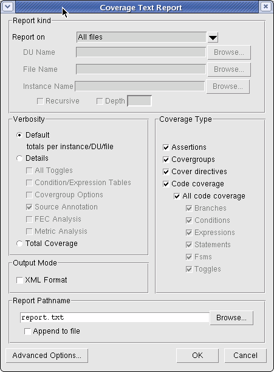

Access:
At the command line: use the
coverage report command. Within the GUI: use the Coverage Text Report
dialog box.
Figure 1. Coverage Report Text Dialog
Procedure
- From the Report on dropdown,
select one of the following:
All
files — Reports data for all design units defined in
each file. (-srcfile switch with coverage report).
All
instances — Reports data in each instance, merged together.
(-instance with coverage report).
All
design units — Reports data in all instances of each
design unit, merged together. (-du with coverage report).
- In the Coverage Type pane,
ensure that the desired coverage types are selected.
- Alter any of the other options
as needed. All options in this dialog correspond to the coverage report and vcover report options.
- Click OK to
create the coverage report.